<div class="phone-main-container" *transloco="let t; read: 'main'">
    <!--  -->
    <app-phone-main-info *ngIf="this.coor; else elseBlock" [coor]="coor"></app-phone-main-info>
    <ng-template #elseBlock>
        <button class="add-city-phone" (click)=" openPopUp()">
            <p class="material-symbols-outlined city-phone_add"> add_circle </p>
            <p class="city-phone_add-text">{{ t('addFavorite') }}</p>
        </button>
    </ng-template>
    <div class="item-info">
        <app-favorite-container></app-favorite-container>
    </div>
</div>

